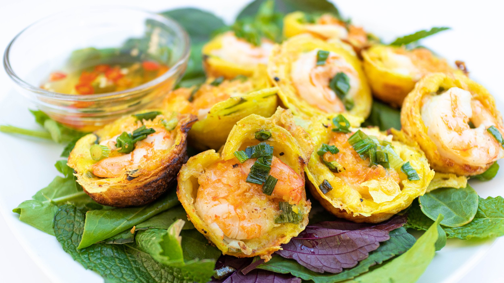

Bánh Khot Full Recipe  Main Ingredients 1 Cup of rice flour - This will be used for creating the main batter that the shrimp will be placed in 1 tablespoon of cornstarch - mixing this in will give the flour a base to mix into 1 cup of water - Can't forget the water! We need to liquify this somehow 200ml of coconut milk - Coconut milk will add to the flavor and a bit of sweetness 1/2 teaspoon of sea salt - Basic seasoning, nothing too crazy Other Ingredients 14 Large shrimp - These need to be peeled and deveined so feel free to do this before you start 1/4 teaspoon of sea salt - more seasoning! 1/8 teaspoon of ground pepper - for a better visual, this is around a pinch, so do it to your liking 2 green onions - these need to be thinly sliced so feel free to prep this as well Leafy lettuce and Vietnamese herbs - These will be used to garnish and eat with towards the end of the recipe Neutral or shallot oil - Other substitutes can work Vietnamese sweet chili dipping sauce - can be made at home or purchased in stores Directions Create the batter: Whisk together all the batter ingredients. Set it aside to “bloom” for at least 20 minutes, but the longer, the better. Marinate the shrimp: In a small bowl, marinate shrimp with salt and pepper. Set aside. Fry: Heat the banh khot or aebleskiver pan on medium-high. Add a little oil to each well. Fill with batter to the rim. It’s also ok to overflow the well so it spills out. This creates additional crispy edges. Sprinkle green onions, and dried shrimp if using. Cover with a lid and cook for about 8 minutes on medium-low. Low and slow is key. Add shrimp: Remove the lid. Add shrimp and top each with more green onions. Drizzle more oil on top of the green onions (this makes “scallion oil”) and around each rim to crisp up the edges. Cover and cook until shrimp is cooked through (about one minute). Remove the lid and cook for about 2 more minutes to your desired crispiness. Repeat with remaining batter and toppings. Remove from pan and serve: Use a sharp metal spoon to remove the banh khot. Scrape the outside edges first. It should detach easily and scoop out. Serve with your favorite leafy greens, herbs, and sweet chili sauce.